Source Control Management (SCM) es el nombre dado al método de trabajo con subversiones o copias de seguridad de sus proyectos a través de un repositorio y una fuente local. Básicamente, una solución de SCM es un paquete de software independiente que controla todos los aspectos de mantenimiento, cambio y comparación de versiones de su proyecto a medida que trabaja en él. Esto es especialmente útil para aquellos que trabajan en equipo y necesitan poder controlar quién hace qué y no preocuparse por perder datos o realizar cambios que puedan necesitar deshacerse en una fecha posterior, pero los individuos pueden beneficiarse de esta poderosa pero flexible. sistema también.
Hay varias herramientas de SCM disponibles para usted, y GameMaker Studio 2 incluye un complemento de Git que se puede utilizar de inmediato, y no necesita instalar ningún paquete adicional, ya que está incluido en el plugin. A continuación ofrecemos un pequeño tutorial sobre cómo configurar este complemento y utilizar las herramientas de SCM con un proyecto. En la parte inferior de la página, también ofrecemos una descripción general del Menú de contexto de SCM, que también se menciona en las secciones del tutorial.
Antes que nada, necesitamos configurar una identidad para que Git se comprometa, lo que significa que debemos ir a la sección PLugins - Control de fuente (Git) de las Preferencias y agregar sus detalles de autenticación.
Esta identidad de autenticación se utilizará para todos los proyectos futuros, y GameMaker Studio 2 le ofrece dos formas diferentes de configurarlo:
- Nombre de usuario y contraseña: Al hacer clic en el botón "Agregar nuevo usuario / Autenticación de pase" se le presentará la siguiente ventana donde puede ingresar la URL del repositorio, el nombre de usuario y el pase:
Si desea que esto afecte solo a un repositorio específico, coloque la URL del repositorio en el campo superior. Sin embargo, si se trata de la autenticación de todo el dominio que desea (es decir: " bitbucket.org "o" github.com ") simplemente coloque el dominio y nada más. Cuando algo necesita verificar la autenticación, primero buscará una coincidencia de depósito específica y luego una coincidencia de dominio. Esto le permitirá tener una autenticación predeterminada para un dominio y anularla con detalles específicos para ciertos repositorios más adelante.
NOTA: Si está utilizando un repositorio externo, debe usar el nombre de usuario y la contraseña asociados con la cuenta configurada para ese repositorio, pero si desea usar un repositorio local, puede usar cualquier nombre de usuario y contraseña.- SSH Keypairs: Al hacer clic en "Agregar nueva autenticación de Keypair SSH" se le presentará la siguiente ventana donde puede ingresar la URL y contraseña del repositorio antes de dar las rutas a los archivos de clave pública y clave privada requeridos: 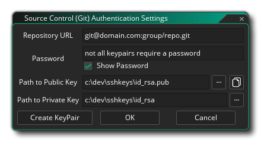 Al igual que las autenticaciones de Nombre de usuario / Contraseña, puede tener autenticaciones específicas de dominio y repositorio cuando usa pares de claves SSH. Si ya tiene un Keypair SSH generado, puede establecer las rutas de acceso aquí, así como también cualquier contraseña requerida para acceder a ellas. Tenga en cuenta que si necesita acceso rápido a la clave pública, el botón de copia
copiará automáticamente los contenidos en el portapapeles por usted. Si aún no tiene un par de llaves SSH, al hacer clic en el botón Crear par clave abrirá un cuadro de diálogo de archivo donde colocar la clave privada, y la clave pública se creará junto a ella; esto completará las rutas al claves públicas y privadas automáticamente para usted.
Esta configuración se usará ahora para comunicarse con el repositorio (IE: Git Hub, Bit Bucket, etc.) cuando se manejen clones, solicitudes de inserción y extracción. Sin embargo, todavía necesita configurar las opciones por proyecto que se pueden hacer abriendo las Opciones principales y haciendo clic en la opción Habilitar control de código fuente. Esto activará SCM para el proyecto actual.Una vez que haya habilitado el control de fuente (y lo haya aplicado o cerrado las Opciones del juego) aparecerá un nuevo menú contextual en la parte superior del IDE con la siguiente opción (que exploraremos en el resto de las secciones de esta página): 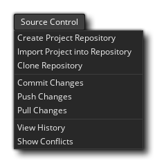
NOTA: si necesita volver a editar los detalles de autenticación, simplemente haga doble clic en la entrada y la ventana de detalles se abrirá para que la edite, pero no podrá cambiar el nombre de la URL. Si necesita cambiar la URL, deberá eliminar los detalles de autenticación y volver a agregarla. Para eliminar los detalles de autenticación, haga clic en el botón de cerrar a la izquierda de la fila en la ventana de Preferencias principal. 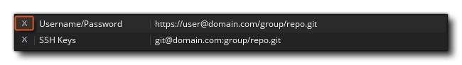
Ahora necesita vincular el IDE de GameMaker Studio 2 a un repositorio:
- Crear un repositorio de proyectos
- Empujar el Proyecto actual a un Repositorio Externo
- Clonar un repositorio existente
En el primer caso, al crear un repositorio de proyectos, se creará un repositorio de Git directamente donde está tu proyecto. En el lenguaje de Git, este es un "repositorio no simple", por lo que no tiene sentido presionar / jalar en este caso, pero aún así puede comprometerse y realizar un seguimiento de los cambios del proyecto, así como revertir los cambios y las revisiones si es necesario. Para configurar esto, solo tiene que hacer clic en Control de fuente > Crear repositorio de proyectos en el menú principal.
Sin embargo, es posible que ya tenga un proyecto existente y quiera ponerlo en un repositorio externo para rastrear y compartir entre su equipo. Esto requiere que se haya configurado un repositorio externo, así como el nombre de usuario y la contraseña correctos establecidos en las preferencias de identidad para acceder a él. Si tiene esto listo, haga clic en Control de fuente > Importar proyecto en repositorio y complete la URL.
Finalmente, como función de conveniencia, puede Clonar un repositorio externo a través del IDE. De nuevo, necesitará el nombre de usuario y la contraseña para el depósito al que se va a conectar para configurar sus preferencias de identidad, y luego solo debe hacer clic en el control de código fuente > Repositorio de clones. Complete la URL (utilizando la variante HTTPS en lugar de SSH) y diga dónde quiere que vaya.
Una vez que el clon finalice, se abrirá automáticamente un explorador de archivos para que pueda abrir el proyecto si lo desea.
A medida que trabaje en su proyecto, naturalmente creará sprites, editará guiones, eliminará líneas de tiempo y todo lo que necesite a medida que su proyecto se desarrolle con el tiempo. Estas son todas las acciones de las que es posible que desee realizar un seguimiento y regresar en caso de que algo salga mal. Esta es la razón principal para usar Source Control, para que cualquier accidente pueda revertirse, y lo guiaremos rápidamente a través del flujo de trabajo básico desde el inicio para que pueda entender cómo funciona.
Comenzando desde el principio, cree un nuevo proyecto GML y luego active el control de fuente a través de las opciones principales. Esto nos da acceso al menú de control de fuente en la parte superior, por lo que inmediatamente vamos a Crear repositorio de proyectos. Si observa los recursos de la sala, puede ver que la sala predeterminada ha ganado una exclamación roja
, lo que significa que ha sido modificado desde su último estado. Si tuviéramos otros recursos en el proyecto, veríamos que todos tienen el mismo icono que se muestra en la imagen a continuación:
Ahora tenemos la opción de comprometer el proyecto en blanco tal como está o de ponerlo en estado base. Por ahora, haremos nuestro primer commit así que haga clic en Source Control > Commit Changes. Esto hará Ahora obtendremos una ventana dividida en tres áreas:
- Cambios en etapas: representan los cambios que se comprometerán con la fuente. Es probable que esté en blanco, pero puede mostrar un cambio en las Opciones principales, lo cual está bien.
- Cambios no registrados: esto muestra los archivos que han cambiado, pero que no le hemos dicho a Git que queremos comprometerlos, son cambios "pendientes".
- Mensaje de compromiso: esta es una nota que podemos agregar para explicar cuáles son los cambios.
Por ahora, haga clic en el botón Etapa Todo, ya que queremos confirmar todos los cambios y escribir algo así como "¡Primero Comprometerse!" en el mensaje de confirmación y haga clic en Confirmar. Todos nuestros recursos ahora deberían tener un tic verde , lo que significa que no hay modificaciones encontradas.
Nuestro proceso de trabajo ahora puede comenzar, y podemos comenzar a construir nuestro proyecto y guardar y comprometer cambios, tal como lo hemos hecho en los párrafos anteriores.
Después de trabajar durante un tiempo, es posible que desee comprobar y ver lo que ha cometido en un momento dado, por lo que querrá abrir el Historial de confirmaciones. Para abrir la ventana del historial, simplemente vaya a Control de fuente > Ver historial, que abre otra ventana con tres paneles: 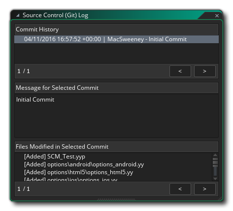
El panel superior describe las confirmaciones, el panel central describe el comentario dado a la confirmación seleccionada y el panel inferior describe los archivos que se han modificado en esta confirmación. Tenga en cuenta que si ha configurado una herramienta Diff, al hacer doble clic en cualquier archivo en esta ventana se abrirá la herramienta diff y podrá ver los cambios entre los archivos.
Arriba, has visto cómo crear un repositorio y comprometer cosas, pero ¿qué sucede si cometes un error y quieres "retroceder" a una confirmación previa? Hagamos un error deliberado y veamos cómo podemos enfrentarlo, entonces...
En primer lugar, cree un recurso nuevo; en este ejemplo crearemos un recurso de secuencia de comandos, e inicialmente no verá ningún icono de estado, ya que en lo que respecta al control de fuente, todavía no existe. En el recurso de script, agregue una línea de código simple, como:
show_debug_message("Hello World");
Si ahora cierra el editor de código, el script se guardará y el ícono del archivo modificado
Los cambios organizados serán:
- el archivo de proyecto.yyp
- un archivo de vista
- el script GML en sí
- el archivo.yy que lo hace referencia
Debe escribir un mensaje de confirmación y luego hacer clic en el botón Confirmar, tal como lo explicamos anteriormente. Ahora, volvemos a nuestro script y cambiamos la línea de código a (por ejemplo):
show_debug_message("Hello World, how are you?");
Cuando cerremos el editor de código, nuevamente se mostrará un ícono rojo al lado del guión, pero nos hemos dado cuenta de que hemos cometido un error con nuestro código y queremos volver a una versión anterior para corregirlo (obviamente, podrías simplemente abra el script y fíjelo fácilmente, ya que el ejemplo es muy simple, pero en proyectos grandes que normalmente no es un enfoque viable). Lo que tenemos que hacer es revertir nuestros cambios.
Para revertir un cambio, primero tenemos que abrir la ventana de confirmación nuevamente, así que vamos a Control de fuente > Confirmar cambios una vez más. Nuestro archivo modificado volverá a configurarse listo para el compromiso, pero esto no es lo que queremos, así que hacemos clic en el botón Unstage All para sacarlo del área de ensayo.
Si ahora hacemos clic derecho
en el archivo que cambiamos obtendremos un menú contextual con una opción para Revertir ruta:
Cuando seleccione esta opción, revertirá los archivos al estado anterior en el que se encontraban.
¡IMPORTANTE! Cuando revierte, recibirá un mensaje pidiéndole que recargue o guarde el proyecto actual debido a que el corrector de archivos detecta los cambios en el disco: 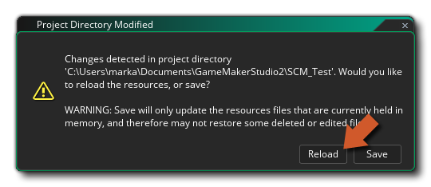 Usted debe golpear recargar y no ahorrar, ya que el ahorro será salvar lo que es la memoria en lugar de volver a cargar los archivos Revertidas.
Eso es todo genial para cuando editas algo y quieres cambiar de nuevo sin haber realizado una confirmación, pero ¿qué pasa cuando has cometido uno o más cambios y quieres volver a una confirmación anterior? Bueno, editemos nuestro script nuevamente para decir:show_debug_message("This is a bad idea");
Ahora lo comprometemos como antes para ponerlo bajo control de fuente. Entonces, esta fue una mala idea y queremos retroceder, lo que significa que para empezar necesitamos abrir nuevamente la ventana de Control de fuente > Ver historial. Veremos una lista de todas las confirmaciones anteriores ahora en esta ventana, comenzando con la confirmación inicial, la confirmación para la secuencia de comandos y luego la confirmación para la secuencia de comandos que hemos editado como una "mala idea":
Ahora tenemos dos opciones. Podemos revertir una revisión completa, que revertirá todos los archivos que se cambiaron a los de la confirmación elegida, o podemos optar por revertir una ruta, que simplemente revertirá un solo archivo. Hagamos la primera opción para comenzar:
- Botón derecho del ratón
- Seleccione Revertir a esta revisión y luego elija Recargar en el mensaje de advertencia.
Debería ver que el script ahora tiene un ícono de estado rojo
Entonces podemos hacer un compromiso en el proyecto y volveremos a donde estábamos una vez más. Sin embargo, también podemos deshacer esa acción para el archivo y obtener nuestra confirmación de "mala idea" haciendo lo siguiente:
- Abra la ventana Commit Changes.
- Desestabilice el script con el código "Hello World".
- Botón derecho del ratón
¡Ahora volvemos a tener el archivo erróneo en el proyecto otra vez! Bueno, podemos aprovechar esta oportunidad para revertir solo esa ruta de archivo en lugar de volver a generar todo en una revisión anterior. Para eso tenemos que hacer lo siguiente:
- Abra la ventana Ver historial.
- Haga clic en el segundo commit (el commit de "Hello World").
- Botón derecho del ratón
Deberíamos volver a tener nuestro código "Hello World" y luego podemos hacer un nuevo compromiso para actualizar el control fuente nuevamente con el archivo corregido.
Cuando su proyecto se almacena en un repositorio externo, debe recordar tanto impulsar los cambios como extraer los nuevos. La razón de esto es que cuando se compromete, almacena sus cambios localmente, lo que le permite trabajar lejos de una conexión a Internet y sincronizar cuando esté listo, y para sincronizar, envía los cambios al repositorio remoto. Al tirar de los cambios, significa que desea realizar los cambios que otros hayan realizado desde el repositorio remoto a su repositorio local. Sin embargo, esto significa que puede haber momentos en que las personas pueden estar editando los mismos archivos, lo que a su vez crea un conflicto de fusión. Necesita saber cómo manejar estos conflictos, por lo que vamos a crear deliberadamente uno de vez en cuando y le mostraremos cómo enfrentarlo.
NOTA: No se recomienda compartir un repositorio de proyecto local (incluso a través de un servicio de sincronización de archivos como Dropbox), ya que los commits generalmente se escriben directamente en él y, por lo tanto, tiene muy poca protección contra conflictos.
Para generar nuestro conflicto, primero necesitamos tener dos repositorios locales, uno para el repositorio principal y otro para nuestra copia. Para crear esto necesitamos clonar el repositorio, que se hace con los siguientes pasos:
- Vaya a Source Control > Clone Repository.
- En el campo URL, escriba la ruta al proyecto que configuramos en la guía Revertir archivos anterior (de forma predeterminada, esto será D:\Users\<Username>\Documents\GameMakerStudio2\<ProjectName> ) 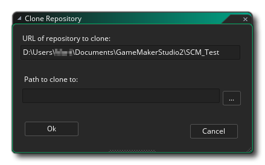
- Luego necesita establecer una ruta para clonar a:
Al hacer clic en el botón "Aceptar", recibirá la siguiente advertencia acerca de intentar clonar un repositorio "no vacío":
Puede hacer clic en "Aceptar" aquí de nuevo.
- Ahora le presentará con un explorador de directorio para crear un repositorio de proxy "desnuda" (esto es un repositorio que puede almacenar con seguridad en Dropbox, por ejemplo). Busque dónde desea crear este repositorio proxy y seleccione (o cree) la carpeta que desea usar.
Una vez hecho esto, GameMaker Studio 2 enviará su proyecto original al proxy, y extraerá uno nuevo a la ruta que estableció en la ventana del Repositorio de clones y luego abrirá automáticamente un buscador de archivos para que pueda abrir el proyecto almacenado. Si ahora vas a Control de fuente > Ver historial, veremos nuestras confirmaciones originales más un nuevo "Push For Clone":Ya ha clonado su repositorio y puede seguir trabajando en la versión local del proyecto.
En esta sección vamos a ver cómo resolver conflictos entre un repositorio local clonado y un repositorio principal (para más detalles, consulte la sección sobre Clonación). Asumiendo que ahora está usando un repositorio local, necesitaremos editar un archivo y luego causar algún tipo de conflicto, así que abra el script de prueba que hemos estado usando y cambie el mensaje "Hello World" a algo como esto:
show_debug_message("Hello World, How Are You?");
Ahora debe guardar el proyecto y enviarlo al repositorio local. Ahora, dado que estamos vinculados a un repositorio principal remoto (incluso si se trata de uno que hemos clonado en el mismo disco), debemos hacer un Push para que los cambios pasen a ser maestros. Para eso, ve a Source Control > Push Changes, que nos dará una actualización de estado en la pestaña Source Control Output: 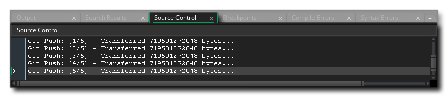
Ahora tenemos que abrir nuestro proyecto original (no el clonado), así que busque dónde lo guardó en el disco, o simplemente revise los Proyectos recientes en el menú Archivo, como debería ser directamente debajo del actual, y cárguelo en GameMaker Studio 2. Una manera fácil de comprobar que tiene el proyecto correcto es simplemente verificar el script que tiene y si el mensaje es "Hello World", entonces tiene el correcto, o puede abrir la ventana del historial de visualización y verificar de esa manera.
Ahora necesita editar el script nuevamente, así que haga que lea algo como esto:
show_debug_message("This will cause a conflict.");
Esto se puede guardar en el disco y se pueden confirmar los cambios, pero si intenta presionar estos cambios, recibirá el siguiente mensaje: 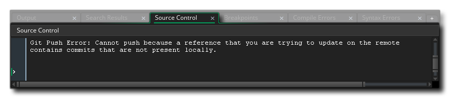
¡Alguien ya ha impulsado cambios que aún no tienes! Esto significa que debe hacer una extracción del repositorio y ver exactamente cuál es el problema, por lo tanto, vaya a Control de fuente > Extraer cambios. Esto mostrará dos ventanas, la primera es una advertencia sobre los archivos cambiados (como en las acciones anteriores, usted quiere elegir Volver a cargar aquí y no Guardar), y la otra es la ventana Conflictos: 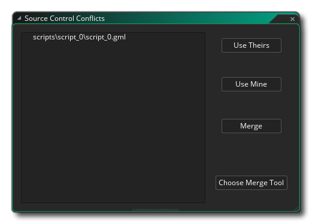
Esta ventana mostrará los archivos en conflicto en una lista a la izquierda, y usted puede seleccionar los archivos de esa lista usando el botón izquierdo del mouse
(o seleccione varios archivos usando
+
- Use los suyos: esto sobrescribirá los cambios que haya realizado con el del repositorio remoto.
- Use Mine - Esto anulará los cambios del repositorio remoto con los que acaba de hacer.
- Fusionar: se intentará abrir una herramienta de combinación externa para manejar el conflicto.
- Elija la herramienta de fusión: esto le permitirá configurar la herramienta de combinación (consulte la sección sobre el uso de una herramienta de combinación externa a continuación para obtener más detalles).
Ahora puede usar los botones para resolver el conflicto, pero antes de hacerlo, solo abra el archivo en conflicto para ver exactamente cuál es el problema. Si abre el script que está en conflicto, ahora se verá así: 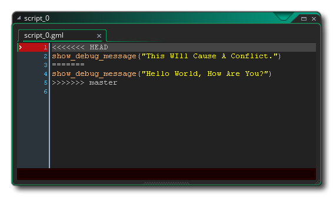
Esto muestra que "Esto causará un conflicto" está en la CABEZA (esto es lo que hemos enviado al repositorio local) y que "Hola mundo, ¿cómo estás?" está siendo extraído de master, el repositorio remoto. Puede volver a la ventana Conflictos ahora y hacer clic en Usar los suyos para extraer el archivo modificado y sobrescribir el archivo HEAD actual. La secuencia de comandos ahora se marcará como modificada y deberá hacer una nueva confirmación y presionar antes de continuar.
Tenga en cuenta que podríamos arreglar esto en GameMaker Studio 2 IDE. Si eliminamos las líneas 1, 2, 3 y 5, nos quedaremos con solo show_debug_message(“Hello World, How Are You?”) y guárdelo, borrará el conflicto, ya que Git asumirá que usted sabe lo que está haciendo con su propio archivo. Es propenso a errores, por lo que se recomienda instalar una herramienta de fusión, configurarla y usarla en lugar de intentar fusionarla manualmente.
Cuando trabajas en un proyecto con otras personas, siempre existe la posibilidad de que haya un conflicto, ya que varias personas editan el mismo archivo y la mayoría de los sistemas de control de origen pueden hacer un buen intento de fusionar cualquier archivo en conflicto, pero cuando hay cambios en el En el mismo lugar, se necesita un poco de ayuda para saber qué hacer: aquí es donde entra una herramienta de combinación para mostrarle los cambios y dejar que decida.
Como cada herramienta de combinación es diferente, hay cuatro macros que se pueden usar para ayudar a especificar archivos que se pueden configurar desde la ventana Conflictos haciendo clic en el botón etiquetado Seleccionar herramienta de fusión:
Al hacer clic en ese botón, se abrirá la ventana de Preferencias en el complemento de Git:
Aquí proporciona una ruta a la herramienta de fusión elegida y luego una macro (o macros) de Opciones de herramienta de combinación para usar al decidir qué hacer, con las siguientes opciones disponibles:
- ${scm_mine}: camino a su versión
- ${scm_thers}: camino a su versión
- ${scm_base}: ruta a la versión antes de que ocurrieran los cambios en conflicto
- ${scm_merged}: ruta a donde debe guardar la herramienta de fusión
Como ayuda para la configuración, cuando le das un camino a ciertas herramientas de combinación, GameMaker Studio 2 completará algunos valores predeterminados para comenzar, dependiendo de la herramienta elegida:
- KDiff3: ${scm_theirs} ${scm_mine} -o ${scm_merged}
- Meld: ${scm_mine} ${scm_merged} ${scm_theirs}
- Notepadd ++: ${scm_merged}
- TortoiseMerge: /base:${scm_base} /theirs:${scm_theirs} /mine:${scm_mine} /merged:${scm_merged}
Tenga en cuenta que si no tiene (o no quiere usar) una herramienta de fusión, puede abrir el script en el IDE e intentar solucionarlo desde allí.
Entonces, de vuelta a nuestro ejemplo Conflicto como se indica en la sección anterior sobre Conflictos... Ha realizado una extracción desde el maestro y uno de los archivos está en conflicto. Esto abre la ventana Conflictos de control de fuente, donde puede hacer clic en la secuencia de comandos en conflicto y ahora hacer clic en Combinar, ya que ha configurado su herramienta de combinación. Al hacer clic en fusionar ahora se abrirá la herramienta donde se puede tratar el conflicto y luego usar la (s) macro (s) suministrada (s) para realizar los cambios requeridos. Una vez que haya terminado y cerrado la herramienta de fusión, GameMaker Studio 2 IDE mostrará la siguiente ventana de confirmación: 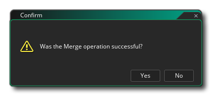
Simplemente responda "Sí" a este mensaje como lo acaba de hacer usted mismo usando la herramienta de fusión, y luego necesita confirmar este cambio para indicar el final de la operación de fusión ( Control de fuente > Confirmar cambios. La ventana Commit ahora mostrará que una fusión está en progreso, así como mostrar algunos archivos no ejecutados:
Estos archivos no sondados son nuestro archivo de script con la adición de .base, .ours y .theirs. Podemos eliminar de forma segura todos estos para hacer clic
Puede hacer clic en Confirmar ahora.
Debido al hecho de que puede tener problemas con los archivos de outher, significa que su flujo de trabajo al usar repositorios remotos o compartidos debe ser el siguiente:
Make Changes > Save > Commit > Pull > Merge > Push
También debe configurar una herramienta Diff para usar cuando realice commits en un repositorio. Esto se configura desde las Preferencias, al igual que con la herramienta Fusionar:
La herramienta Diff está configurada de la misma manera que la herramienta Fusionar, pero solo usa el ${scm_base} y ${scm_theirs} opciones - en este caso, ${scm_base} representa el archivo sin modificar, mientras que ${scm_theirs} representa el estado actual del archivo. Las opciones de herramienta deben ser rellenados previamente con las opciones predeterminadas para Meld, KDiff3 y TortoiseMerge, tal como lo fueron para la herramienta Fusionar. Tenga en cuenta que GameMaker Studio 2 no es compatible con la publicación de parches de diferencias de un solo archivo, por lo tanto, no hay ningún valor predeterminado para el Bloc de notas.
Para ver los cambios entre las revisiones actuales y anteriores usando la herramienta Diferir, simplemente abra la ventana Confirmar y luego haga doble clic en un archivo. Si la herramienta se configuró correctamente, se lanzará y podrá ver los cambios entre los archivos.


Menú contextual de control de fuente
Cuando haya activado el control de código fuente para cualquier proyecto (consulte la sección Configuración del complemento de control de Git de la fuente anterior para obtener más información), GameMaker Studio 2 mostrará el siguiente menú contextual en la parte superior:
Aquí describimos cada una de las opciones disponibles (la mayoría de ellas se explican con más profundidad en las secciones de tutoriales anteriores):
- Crear repositorio de proyectos: esta opción le permite crear un repositorio local en el mismo directorio que sus archivos de proyecto.
- Importar proyecto al repositorio: esta opción le permite importar un proyecto a un repositorio externo.
- Repositorio de clones: esta opción le permitirá clonar un repositorio desde un origen a un nuevo destino.
- Cambios de compromiso: con esta opción, puede organizar los archivos modificados en su proyecto y luego enviarlos al repositorio.
- Cambios de inserción: después de realizar una confirmación o fusión, esta opción se utiliza para enviar los cambios al depósito maestro.
- Cambios de extracción: con esta opción puede actualizar el repositorio local retirando los archivos modificados del repositorio principal.
- Ver historial: Esto abrirá la ventana de historial donde puede ver todo el historial de versiones del proyecto y elegir deshacer rutas de archivos específicas o revisiones completas.
- Mostrar Conflictos: Esto abrirá la ventana Conflictos y enumerará los archivos conflictivos que puedan existir en el proyecto, lo que le permite tratarlos ya sea a través del IDE de GameMaker Studio 2 o usando una Herramienta de combinación específica.